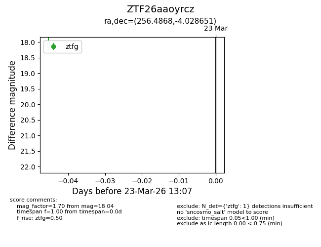
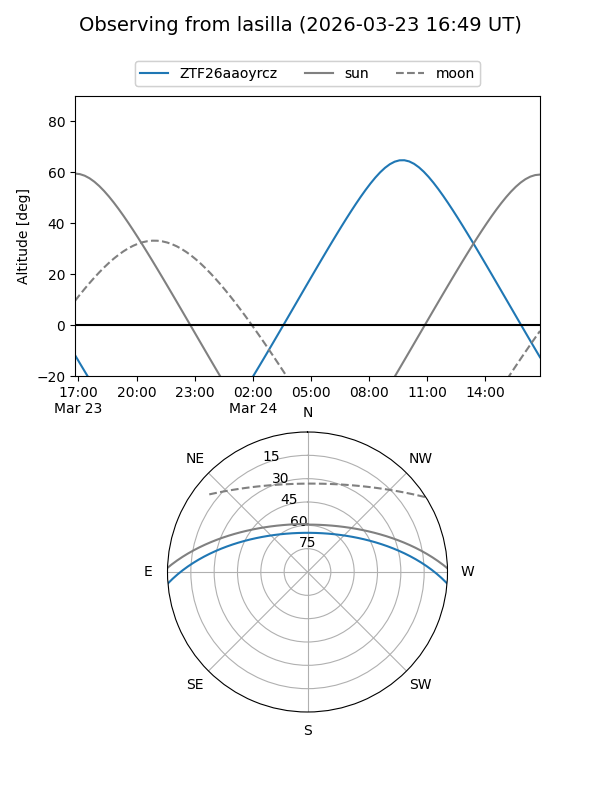
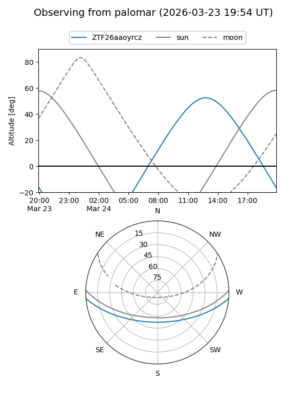

ZTF26aaoyrcz
Target ZTF26aaoyrcz at 2026-03-23 13:09
Aliases and brokers:
FINK: link
Lasair: link
ALeRCE: link
alt names
ZTF26aaoyrcz (ztf,fink_ztf)
Coordinates:
equatorial (ra, dec) = 256.4868,-4.02865
equatorial (HMS+DMS) = 17:05:56.83,-04:01:43.14
galactic (l, b) = (16.4408,+21.24321)
Flags:
Photometry:
last ztfg=18.04
1 ztfg detections
Lightcurve

Visibility


Additional plots